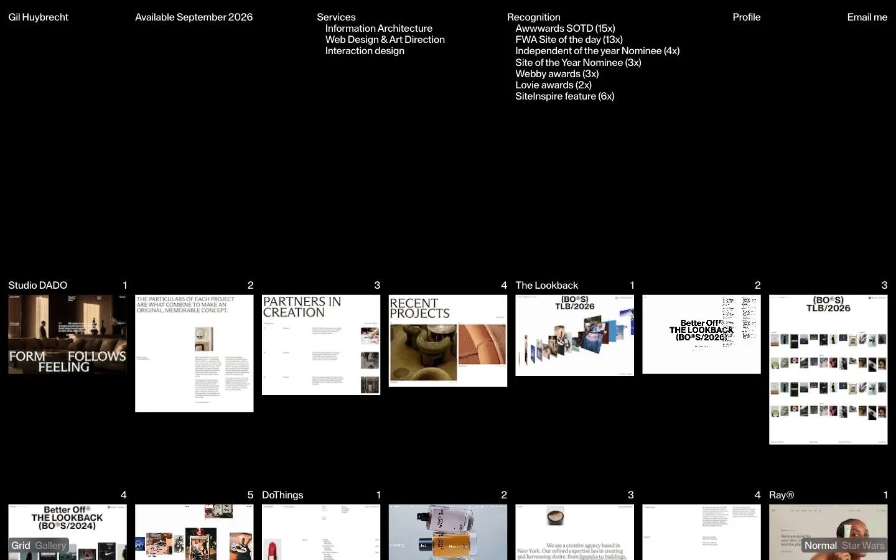

Gil Huybrecht
- Личные сайты и портфолио
- Дизайнер
- Минимализм
- Монохром
- Утилитарный техно
- Действующий сайт

Что это
Портфолио бельгийского арт-директора Гила Хёйбрехта, специалиста по редакционным сайтам, интернет-магазинам и «погружающим» онлайн-проектам. Чёрный экран, в шапке — услуги, награды и статус доступности, ниже — работы Studio DADO, The Lookback, DoThings и Ray®, каждая рядом пронумерованных кадров. Утилитарный наглядный сайт-портфолио Гила Хёйбрехта — арт-директора из Бельгии.
Что смотреть в первую очередь
Начать с шапки: имя, срок доступности, услуги и награды — вся суть на одном экране. Дальше — сетка работ с пронумерованными кадрами вместо привычных больших обложек.
Интересные факты
- Скриншот владельца похож на живую версию: тот же чёрный экран и та же сетка работ с номерами кадров; в кадре шапки — имя, строка «Available September 2026», услуги, награды, ссылки Profile и Email me. Текст строки доступности на живой странице не сверен.
- Главная — один длинный экран-каталог: у каждой работы слева название, справа ряд пронумерованных миниатюр, которые листаются как кадры плёнки. Кроме главной есть /profile, /gallery, /newsletter, /privacy-policy и отдельная страница на каждый проект (/projects/studio-dado и другие) — все они перечислены в sitemap.xml.
- Сайт сделан на Nuxt (фреймворк поверх Vue): об этом говорят пометки «nuxt-robots» в robots.txt и подпись «@nuxtjs/sitemap v8.0.15» в sitemap.xml.
- Картинки лежат не на самом сайте, а в медиахранилище DatoCMS — все адреса начинаются с www.datocms-assets.com/154012/ и содержат параметры сжатия и подгонки размера.
- Хостинг — Netlify: сервер отвечает заголовками Server: Netlify, X-Nf-Request-Id и Cache-Status: «Netlify Edge».
- В шапке раздел Recognition с числом наград: Awwwards SOTD (15×), FWA Site of the day (13×), Independent of the year Nominee (4×), Site of the Year Nominee (3×), Webby awards (3×), Lovie awards (2×), SiteInspire feature (6×).
- При загрузке главной в разметке виден счётчик «0%» — типичный индикатор прогресса загрузки. С этой сети обычные запросы к главной и внутренним страницам зависали, поэтому текст читался через релей translate.goog и сервис метаданных api.microlink.io; robots.txt и sitemap.xml отдались напрямую.
Паспорт
- Домен
- gilhuybrecht.com
- Тип сайта
- Портфолио
- Категории
- Личные сайты и портфолио
- Подкатегории
- Дизайнер
- Для кого
- Дизайнерам, Агентствам
- Стиль
- Минимализм, Монохром, Утилитарный техно
- Язык
- Английский
- Страна
- Бельгия
- Автор
- Gil Huybrecht — дизайнер и арт-директор
- Год
- не указано
- Добавлен в коллекцию
- 31.10.2026
Палитра
-
#000000— 74% кадра -
#FDFDFC— 15% кадра -
#C7C9C5— 4% кадра -
#3C342E— 2% кадра -
#958F8F— 1% кадра
- Режим
- Тёмная
- Цвет фона
- Нейтральный
Технологии
- Nuxt
- Nuxtjs (@nuxtjs/sitemap)
- DatoCMS
- Netlify